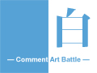
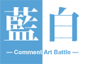
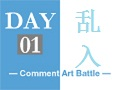

【蓝白弹幕祭简介】
写在前面的话：
弹幕艺术【点击详情】，作为一种存在于弹幕播放器上的独特艺术。]
对播放器的改变有着十分明显的依赖性。可以说播放器的发展史，就是弹幕艺术的发展史。
同时，不同的站点拥有不一样的播放器，其弹幕文化也有着或多或少的差异。当然，即使是有着不一样的弹幕方式，但在内容表达上，所有弹幕站点的弹幕文化都会是一致的。弹幕艺术应该是能够传达弹幕的美和弹幕所修饰的物事（比如歌曲）的美，同时也是传达某种弹幕君所要表达的感情。当然，我的理解也许显得片面，可能会因为时间的推移，这个概念也会得到扩展。
随着Bilibili的高速发展，弹幕现状同样是风云变幻，弹幕模式的进步与淘汰在所难免。新的弹幕模式越来越多姿多彩，弹幕能做到的也越来越多，弹幕艺术的定义也得以变得更加丰富饱满。
过去的蓝白弹幕祭曾作为弹幕职人最高的弹幕礼赞，聚集了一批又一批的热爱“弹幕艺术”的弹幕君。大家都用自己的热情和爱来诠释这种独特的艺术！ 虽然有很多人因为各种各样的原因隐退，但是这份对弹幕的热情却依然在传承。
蓝白弹幕祭：
这个活动最初的名称源自日本传统迎新歌会——红白歌合战，称为“蓝白”是由于活动是基于bilibili的弹幕系统，bilibili播放器的代表色调就是蓝和白。
合战采用的是报名+邀请制， 参战者被主办方分为蓝、白两组，所有参战者都提交各自作品后，每个比赛日蓝组和白组都各自拿出一个作品对决，对决方式就是由观众投票（投票遗址），二选一。所有比赛日结束后统计蓝组和白组所有作品的总得票数，票数多者为胜出组。
不过，弹幕作品本身制作周期都有一至两月不等，在实际操作上并没有那么明显的阵营分化，已确定的参战者的制作过程都是集体地交流进度，胜负根本不会被他们在乎。所以，这两届名为弹幕祭，实为弹幕基。
这是第一回蓝白弹幕合战的战场： 
以及宣传CM和完结ED：  周刊29期15m35s处
当然，还有应援： 
这也是蓝白弹幕祭的一大特色性话题。
当时的特殊弹幕模式（Mode7）仅有坐标定位，并不能坐标移动。（此届蓝白刚结束，播放器便更新了新的方式）
以及宣传CM和完结ED： 周刊55期16m12s处
此时的特殊弹幕模式（Mode7）可以坐标移动，任意字号。（此届蓝白刚结束，播放器便上线了代码弹幕模式（Mode8））
这里就不得不提到官方的弹幕大赛。虽然纯观众评分定高低和各种模式类型作品的混杂的方式，在公平性显得失之偏颇，在规则和运作上有一些不足，但是，这回弹幕大赛，使弹幕艺术的水平提升到了一个新的高度。并且，随之后来而对全站会员而开放权限（需要使用积分购买），也使得所有人都有机会进入到这个领域来。
现如今，也许只是up主给自己的视频做一份高级弹幕歌词，也许只是热心的观众想给自己喜欢的视频制作一份漂亮的字幕，也许只是给自己喜欢的视频画上一副弹幕画…… 可能不是所有人都是专职作为弹幕君，但是人人都可以做出自己的“神弹幕”。 这也是一直以来，大家都秉承的理念：只要有爱，人人都是弹幕君。
第三回蓝白弹幕祭这次启动，是众多热爱弹幕艺术的人共同期待的产物。 弹幕君希望能以这种独特的方式，传递自己的正能量，为弹幕站观众需要的提供弹幕支持，为弹幕站的弹幕文化添姿加彩！
评论系统由Disqus提供。